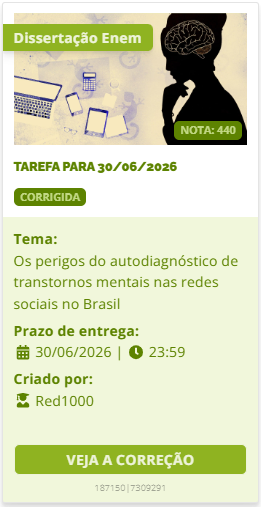
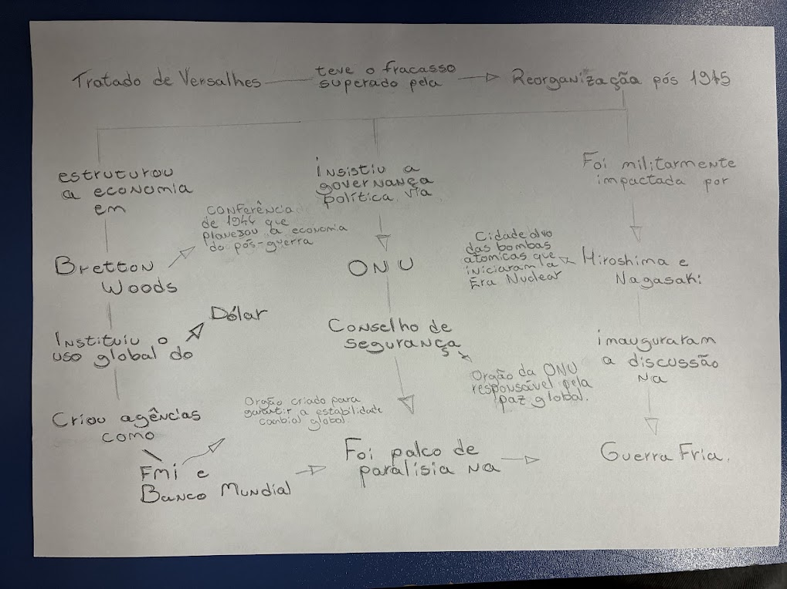
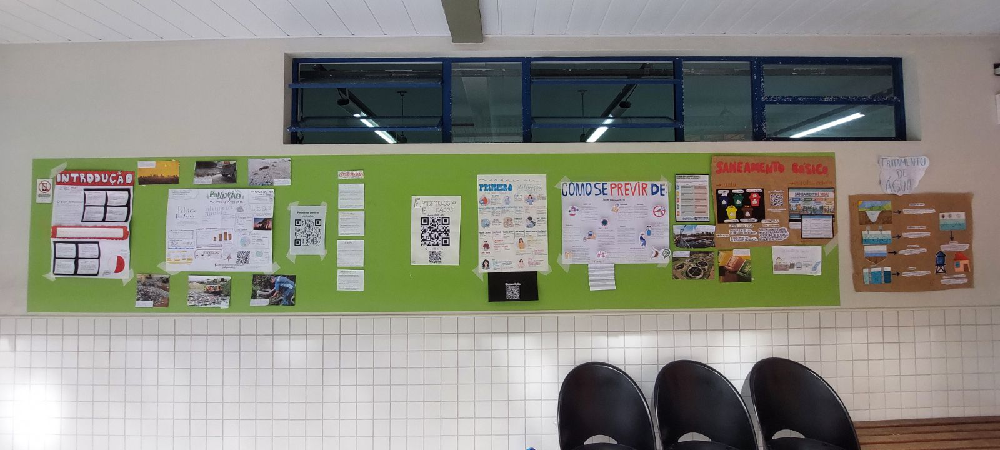
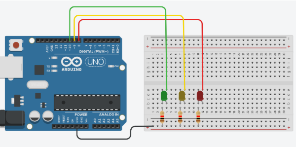
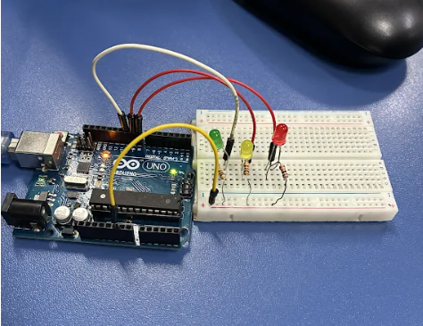
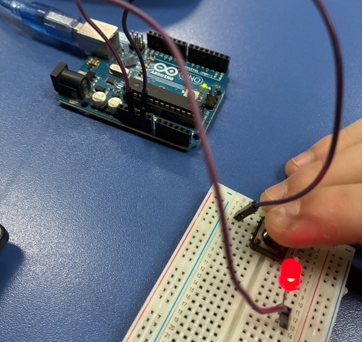
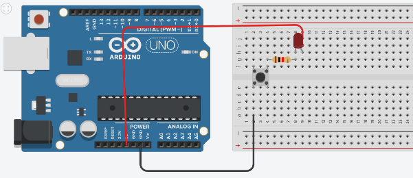
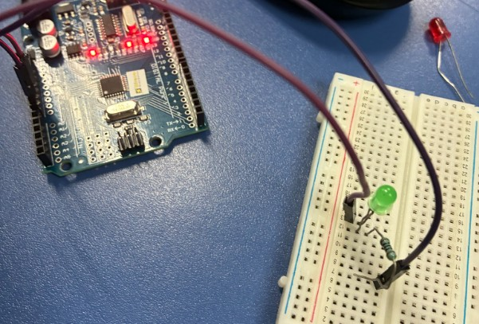
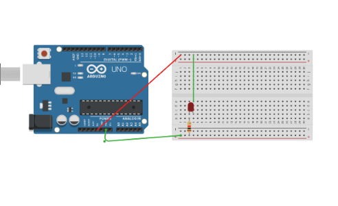

Bem-vindo

Olá! Sou o Francisco, tenho 18 anos e sou um entusiasta da tecnologia. Atualmente, foco meus estudos na preparação para o curso de Sistemas de Informação na UFSC. Além da programação, sou apaixonado por música, cinema e estratégia. Este portfólio reflete minha jornada acadêmica no SESI SENAI.
Linguagens, Códigos e suas Tecnologias
Trabalho: Explicar G.H.
Trabalho: “Explicar G.H.: entre o corpo e a sociedade”
Habilidades Avaliadas: H4 e H22
Minha Crítica: Ler Clarice Lispector é uma viagem. É doido ver como ela desconstrói a sociedade e o próprio corpo. A atividade foi massa para entender que a literatura vai muito além da narrativa superficial.
Game Literário: Arcadismo
Atividade: Game literário sobre Arcadismo.
Habilidade trabalhada: H15
Jogar AgoraVideomanifesto
Objetivo/assunto: Criação de um vídeo em grupo sobre o manifesto contemporâneo.
Crítica pessoal: Gostei da relação da criação do vídeo com o gênero manifesto, e achei tranquila a realização da atividade.
Habilidades: H3 - Identificar o tema principal, os subtemas e finalidades dos textos; H24 - Produzir textos escritos de domínio acadêmico e educacional.
"Que tipo de arte você consome?"
Objetivo/assunto: Escrever sobre seu artista, filme e música favoritos, utilizando o simple past.
Crítica pessoal: Gostei de realizar uma atividade onde falava sobre assuntos que gosto.
Habilidade: H25 - Interpretar textos em Língua Estrangeira Moderna (Inglês).

Print da Nota do Red1000 - 2º Trimestre
Objetivo/assunto: Realizar redação sobre "Os perigos do autodiagnóstico de transtornos mentais nas redes sociais no Brasil".
Crítica pessoal: Foi bom me forçar a pensar sobre o assunto e montar um texto em forma de dissertação, apesar da dificuldade.
Habilidade: H22 - Produzir textos técnicos de acordo com uma estrutura estabelecida.
Aguardando...
Matemática e suas Tecnologias
Atividade Filme Quebrando a Banca
Perguntas específicas sobre o filme, junto com escrever um roteiro sobre um filme de Hollywood que tenha um assunto da matemática em sua produção.
Competências e habilidades trabalhadas: C5, H30 e H31.
Jogo Quebrando a Banca
Desenvolver um jogo original utilizando os conceitos de análise combinatória e teoria das probabilidades, inspirado no filme Quebrando a Banca.
Competências e Habilidades: C5, H30 e H31
AV1 - Estatística
Descrição: Realizamos uma pesquisa, juntamos os dados, organizamos e depois montamos uma conclusão.
Habilidades: H27, H28 e H29.
Abrir no CanvaAguardando...
Ciências Humanas e Sociais Aplicadas
Revolução Russa - Karl Marx, teoria marxista e os marxismos do século XX
Pesquisei na internet o contexto e utilizei a I.A para que traduzisse as escritas em russo, essa imagem, dentre as que achei, foi a que mais me chamou atenção, a atividade me deu uma contextualização sobre a época, muito melhor do que a que eu tinha.
Habilidades: As habilidades relacionadas não estão presentes na postagem da atividade.
A Grande Guerra
Pesquisamos imagens e informações da época, e utilizamos o canva para recriar um jornal da época, era nossa AV2 e pesquisando, aprendi coisas e detalhes sobre a primeira guerra mundial, que até então eu desconhecia.
Competências e habilidades: C3, H15, H16, H20, C6 e H39.
Geopolítica
Pesquisamos e estudamos cada área solicitada, escolhemos a Itália por ser um país muito rico culturalmente, gostei muito de apronfundar meus conhecimentos sobre as informações e estatísticas do país.
Competências e habilidades: C1, H1, H2, H3, H4 e H5.

Reorganização do Mundo após 1945
Descrição: Conectar um evento/instituição criado após 1945 com o presente.
Habilidades: C2, C4, H10, H22, H26 e H27.
Temas Contemporâneos
Descrição: Realização de uma apresentação oral, utilizando suporte visual, com assunto livre dentro da temática sociedade e política, adotando posicionamento crítico.
Habilidades: H30, H39 e H40.
Abrir no CanvaApagamento da Alteridade: quando o outro deixa de ser visto como humano
Descrição: A partir da reflexão, investigação de uma situação em que um grupo social é tratado predominantemente por estereótipos, preconceitos ou discursos que negam sua individualidade, seguida de pesquisa e apresentação em sala.
Habilidades: Não informadas.
Abrir no CanvaAguardando...
Ciências da Natureza e suas Tecnologias
Descrição:
1. Descrição:
O meme apresenta três cientistas surpresos ao notar que o braço humano, a asa de morcego e a nadadeira de baleia possuem a mesma estrutura óssea, apesar de suas aparências e funções serem completamente diferentes.
2. Conceitos Biológicos:
Órgãos Homólogos: Estruturas com a mesma origem embrionária e arquitetura básica que revelam um parentesco entre as espécies.
Irradiação Adaptativa: Processo onde um ancestral comum dá origem a diferentes linhagens, cada uma adaptada a um ambiente (terrestre, aéreo ou aquático).
Divergência Evolutiva: A evolução "remodelou" o membro original para funções distintas (segurar, voar e nadar) conforme a necessidade de sobrevivência de cada grupo.
Competências e habilidades: C3, H15 e H18.
Se já sabemos que os combustíveis fosseis poluem, por que ainda usamos?
Competências e habilidades: C1, H1, C2, H9 e H11
Relatório da atividade prática disputa de eletricidade.
Competências e habilidades: C1, H1, C2, H7, H9, H11 e H12

Atividade 1 - Mural Interativo
Explicação da proposta: Transformar conhecimentos científicos em uma exposição sobre a relação entre meio ambiente e saúde.
Habilidades: C2, C3, C4, H11, H15, H18 e H23.
Atividade 2 - Portfólio Digital de Eletroquímica
Habilidades: C2, H7 e H9.
Atividade 3 - Cartilha Eletricidade e o Corpo Humano
Habilidades: C1, C2, C4, H3, H4, H12 e H23.
Aguardando...
Modelagem de Sistemas
Documento Grand Prix.
Não realizamos atividades.
Aguardando...
Banco de Dados
Documento Grand Prix.
Não realizamos atividades.
Aguardando...
Programação de Aplicativos e Desenvolvimento de Sistemas
Matéria do 2° Trimestre.
Projeto da BP - Promotora de Crédito
Descrição: Projeto de gateway de pagamento para o Ensino Médio Técnico, onde os alunos, em times, desenvolveram um gateway de pagamento (backend + frontend) usando Node.js, React e SQLite. O desafio simulava um sistema real, com cobrança no cartão, aplicação de taxas por bandeira, cálculo de juros compostos por parcela e um limite diário de R$5.000 por cartão.
Habilidades: Não informadas.
Ver no GitHubAguardando...
IoT
Documento Grand Prix.


Circuito do Semáforo
Descrição/justificativa: Simulação de sistema de controle de trânsito desenvolvida no simulador TinkerCad.
Habilidades: Não informadas.
Ver Código do Circuito

Circuito com Push Button
Descrição/justificativa: Simulação no TinkerCad do circuito com leitura de sinal direto por nível de tensão física.
Habilidades: Não informadas.
Ver Código do Circuito

Circuito para Acender LED
Descrição/justificativa: Atividade introdutória de IoT para acender um LED, com o protótipo lógico e a montagem física do circuito.
Habilidades: Não informadas.
Aguardando...